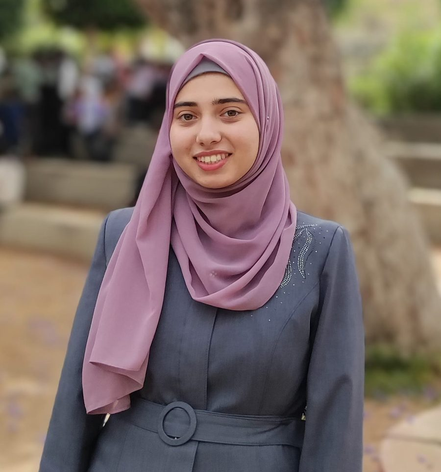
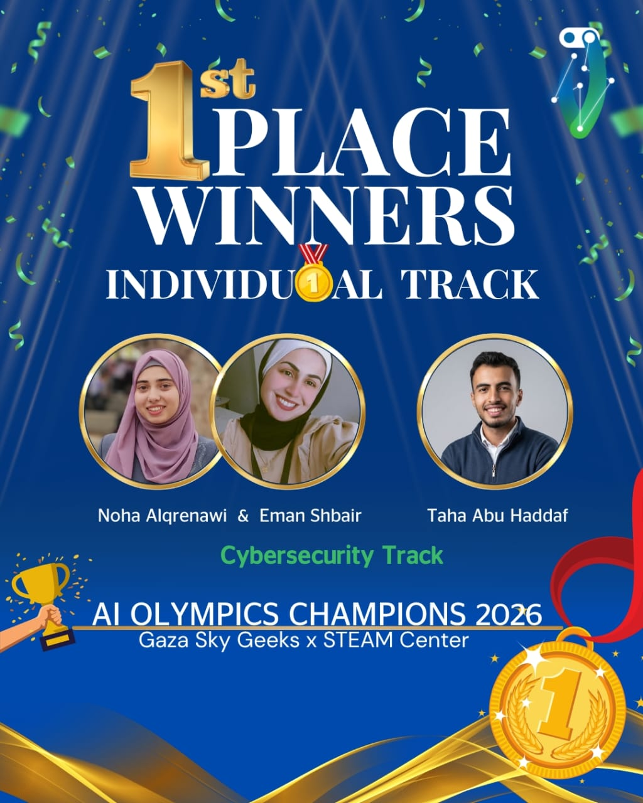

I'm a Cybersecurity Engineering student at UCAS with a strong interest in securing and defending real-world systems. My interests span security operations, web application security, threat hunting, penetration testing, and security-focused AI applications.
I learn by doing — through cybersecurity training, CTF competitions, technical projects, and hands-on labs, including the TryHackMe SOC Level 1 path. These experiences have shaped how I approach problems: understand the system, investigate carefully, test assumptions, and document what I learn.
Beyond technical work, I serve as Vice President of the Engineering Club, where I contribute to team coordination, technical events, workshops, and student-led initiatives. I enjoy working with others, learning from different perspectives, and turning technical knowledge into practical outcomes.
I'm looking to contribute to real-world cybersecurity projects and international teams — collaborative environments where I can keep learning while delivering meaningful work.
Grouped the way I actually use them — from writing code, to detecting threats, to understanding how systems fail.
Hands-on labs and builds that go beyond coursework.
Built a custom Snort 3 detection rule to catch reverse shell activity inside an isolated Kali Linux / Windows 10 lab. Focused on traffic direction, TCP session state, and content matching to keep the alert precise rather than noisy. What I learned: the SOC workflow from detection and validation through investigation and response.
A real-time, behavior-based ransomware detection system for Windows environments using machine learning — built as my graduation project with two teammates, then presented and discussed before an examination committee. Structured with dedicated config, machine learning model, and test modules in Python. I contribute to the project structure, model development, configuration, and testing. Hosted on my teammate's GitHub as a shared team repository.
More projects will be added here as they're documented.
Competitions, leadership, training, and community moments along the way.

Gaza Sky Geeks & STEAM Center.
Palestinian Collegiate Programming Contest.
UCAS × CyberTalents.
International certification, scored 90%. Covered Python for AI, Machine Learning, Deep Learning, NLP, and AI deployment.
SOC fundamentals, alert triage, investigation, phishing analysis, defensive security, and incident response.
Web app security, reconnaissance, enumeration, vulnerability identification, exploitation, and pentesting methodology.
In progressNetwork monitoring, penetration testing, malware analysis, and defense against social engineering.
Threat intelligence techniques, attacker profiling, and advanced detection strategies.
Security operations, alert analysis, SIEM tools, and identifying suspicious activity.
Securing databases, access control models, encryption, and vulnerability mitigation.
Intensive training on Kali Linux and foundational penetration testing concepts.
Foundational offensive security skills and penetration testing methodologies.
In progressOpen to cybersecurity internships, international remote projects, and collaborative security work.